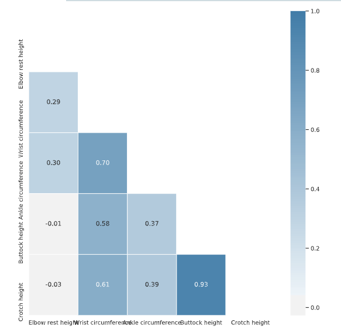
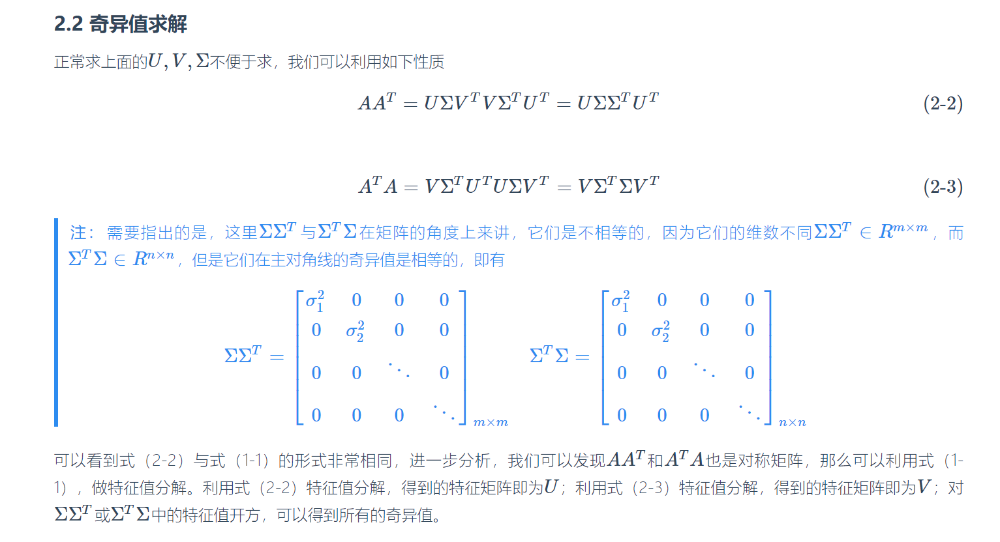
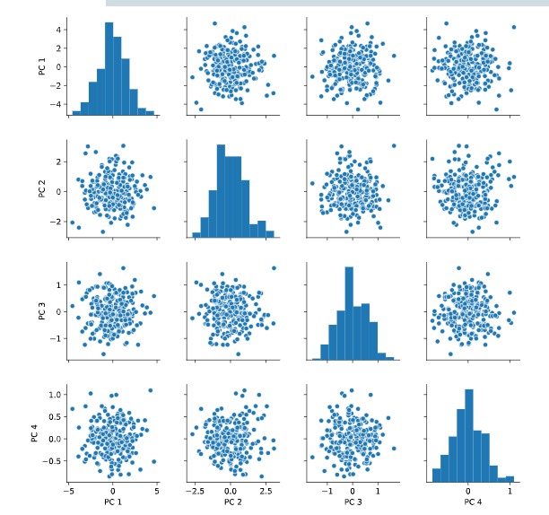
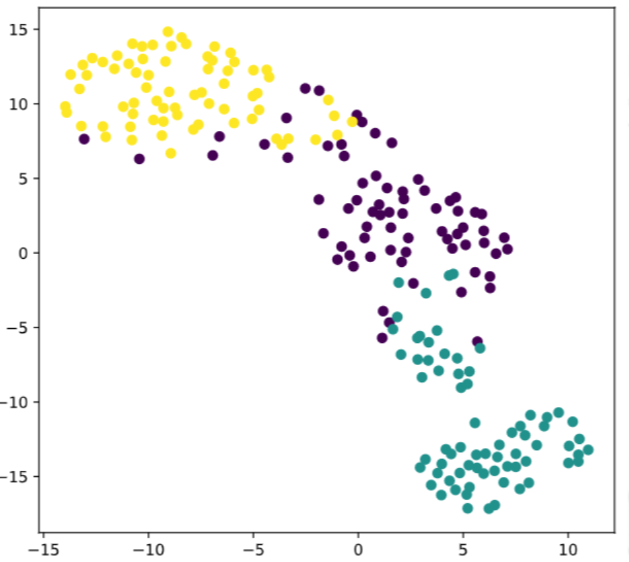

processing
2020-03-07
序言
- t-SNE
- PCA
- 特征选择
- 特征提取
1 summary
再ML中“属性”==“特征”
1.1 tidy data
整齐数据
我们平时所使用的数据都是经过整理的整齐数据(TidyData)，然而实际上我们接收到的数据很多都是杂乱无章的，为了进行数据的预处理，我们需要先把数据转换为整齐的数据.
查询混数据框的维度
一般可以通过seaborn绘制pairplot图，完后观察一下异常特征 对于不需要的特征可以采取的方式的是,删掉指定列
1.2 特征选择
- Filter：过滤法，按照发散性或者相关性对各个特征进行评分，设定阈值或者待选择阈值的个数，选择特征。
- Wrapper：包装法，根据目标函数（通常是预测效果评分），每次选择若干特征，或者排除若干特征。
- Embedded：嵌入法，先使用某些机器学习的算法和模型进行训练，得到各个特征的权值系数，根据系数从大到小选择特征。类似于Filter方法，但是是通过训练来确定特征的优劣。
特征选择是从原始特征数据集中选择出子集，是一种包含的关系，没有更改原始的特征空间。
因为特征选择可以达到降维的目的，因此可以提高模型的泛化能力降低过拟合
1.3 特征提取
特征提取主要是通过属性间的关系，如组合不同的属性得到新的属性，这样就改变了原来的特征空间,新的特征可以是许多原有特征的线性组合。 >extracted features can be quite hard to interpret
提取的特征可能很难解释，哈哈，是这样的吧，因为新特征是原有特征的线性组合
- PCA
- LDA
- SVD
1.4 维数灾难
特征过多，因此需要选择有意义的特征进入模型训练，因此选择降维
1.5 filter
1.5.1 方差阈值特征选择
也叫filter，就是移除方差低的 方差阈值（VarianceThreshold）
是特征选择的一个简单方法，去掉那些方差没有达到阈值的特征。默认情况下，删除零方差的特征，例如那些只有一个值的样本。 假设我们有一个有布尔特征的数据集，然后我们想去掉那些超过80%的样本都是0（或者1）的特征。布尔特征是伯努利随机变量，方差为 p(1-p)。zhilaizhiwang
也就是选择方差大于阈值的特征
可以通过boxplot观察方差大小 可以直接使用sklearn中的VarianceThreshold方法
from sklearn.feature_selection import VarianceThreshold
# Create a VarianceThreshold feature selector
sel =VarianceThreshold(threshold=0.001)
# Fit the selector to normalized head_df
sel.fit(head_df / head_df.mean())
# Create a boolean mask
mask = sel.get_support()
# Apply the mask to create a reduced dataframe
reduced_df = head_df.loc[:,mask]
print("Dimensionality reduced from {} to {}.".format(head_df.shape[1], reduced_df.shape[1]))
<script.py> output:
Dimensionality reduced from 6 to 4.1.7 Pairwise correlation
两两的相关系数
计算相关系数可以通过.corr()
heat_map()可是查看热力图，也就是两两相关系数的图
datacamp上面的一个小的栗子
# Create the correlation matrix
corr = ansur_df.corr()
# Generate a mask for the upper triangle
mask = np.triu(np.ones_like(corr, dtype=bool))
# Add the mask to the heatmap
sns.heatmap(corr, mask=mask, cmap=cmap, center=0, linewidths=1, annot=True, fmt=".2f")
plt.show()
np.triu()返回三角矩阵，确实，heatmap返回上三角或者下三角就行了
1.8 去掉相关性强的特征值
person相关系数法，filter的一种，去掉相关性强的
np.ones_like 返回一个用1填充的跟输入 形状和类型 一致的数组
# Calculate the correlation matrix and take the absolute value
# 计算相关系数
corr_matrix = ansur_df.corr().abs()
# Create a True/False mask and apply it
mask = np.triu(np.ones_like(corr_matrix, dtype=bool))
tri_df = corr_matrix.mask(mask)
# List column names of highly correlated features (r > 0.95)
to_drop = [c for c in tri_df.columns if any(tri_df[c] > 0.95)]
# Drop the features in the to_drop list
reduced_df = ansur_df.drop(to_drop, axis=1)
print("The reduced_df dataframe has {} columns".format(reduced_df.shape[1]))
<script.py> output:
The reduced_df dataframe has 88 columns1.9 RFE
wrapper
递归式特征消除
递归特征消除的主要思想是反复的构建模型（如SVM或者回归模型）然后选出最好的（或者最差的）的特征（可以根据coef来选），把选出来的特征选择出来，然后在剩余的特征上重复这个过程，直到所有特征都遍历了。这个过程中特征被消除的次序就是特征的排序。因此，这是一种寻找最优特征子集的贪心算法.csdn
参数
estimator:学习器
n_features_to_select:特征选择的个数
step：int or float,可选(default=1)如果大于等于1，step对应于迭代过程中每次移除的属性的数量（integer）。如果是（0.0，1.0），就对应于每次移除的特征的比例，四舍五入
属性
n_features_：The number of selected features.
support_：array of shape [n_features] The mask of selected features.选择特征特征的bool型，优秀特征是true，不优秀的特征是false？
ranking_:array of shape [n_features] The feature ranking, such that ranking_[i] corresponds to the ranking position of the i-th feature. Selected (i.e., estimated best) features are assigned rank 1.输出第i个特征的排名位置
estimator_：object The external estimator fit on the reduced dataset.其他能减少数据集的估计器
from sklearn.feature_selection import RFE
from sklearn.linear_model import LogisticRegression
from sklearn.datasets import load_iris
from sklearn.feature_selection import RFE
iris = load_iris()
#特征矩阵
# print(a)
print(iris.data)
#目标向量
# print(iris.target)
#递归特征消除法，返回特征选择后的数据
#参数estimator为基模型
#参数n_features_to_select为选择的特征个数
print(RFE(estimator=LogisticRegression(), n_features_to_select=2).fit_transform(iris.data, iris.target))
1.10 基于树的特征选择
embedding
基于树的预测模型（见 sklearn.tree 模块，森林见 sklearn.ensemble 模块）能够用来计算特征的重要程度
# Perform a 75% training and 25% test data split
X_train, X_test, y_train, y_test = train_test_split(X, y, test_size=0.25, random_state=0)
# Fit the random forest model to the training data
rf = RandomForestClassifier(random_state=0)
rf.fit(X_train, y_train)
# Calculate the test set accuracy
acc = accuracy_score(y_test, rf.predict(X_test))
# Print the importances per feature
print(dict(zip(X.columns, rf.feature_importances_.round(2))))
# Print accuracy
print("{0:.1%} accuracy on test set.".format(acc))
<script.py> output:
{'diastolic': 0.08, 'pregnant': 0.09, 'age': 0.16, 'insulin': 0.13, 'glucose': 0.21, 'family': 0.12, 'bmi': 0.09, 'triceps': 0.11}
77.6% accuracy on test set.- get_support 方法来查看哪些特征被选中，它会返回所选特征的布尔遮罩（mask）参考
1.11 正则化线性回归
- LassoCV
- RidgeCV
from sklearn.linear_model import LassoCV
# Create and fit the LassoCV model on the training set
lcv = LassoCV()
lcv.fit(X_train, y_train)
print('Optimal alpha = {0:.3f}'.format(lcv.alpha_))
# Calculate R squared on the test set
r_squared = lcv.score(X_test, y_test)
print('The model explains {0:.1%} of the test set variance'.format(r_squared))
# Create a mask for coefficients not equal to zero
lcv_mask = lcv.coef_ != 0
print('{} features out of {} selected'.format(sum(lcv_mask), len(lcv_mask)))
Optimal alpha = 0.089
The model explains 88.2% of the test set variance
26 features out of 32 selected1.12 集成器特征选择器
from sklearn.feature_selection import RFE
from sklearn.ensemble import GradientBoostingRegressor
# Select 10 features with RFE on a GradientBoostingRegressor, drop 3 features on each step
rfe_gb = RFE(estimator=GradientBoostingRegressor(),
n_features_to_select=10, step=3, verbose=1)
rfe_gb.fit(X_train, y_train)
# Calculate the R squared on the test set
r_squared = rfe_gb.score(rfe_gb,y_test)
print('The model can explain {0:.1%} of the variance in the test set'.format(r_squared))
<script.py> output:
Fitting estimator with 32 features.
Fitting estimator with 29 features.
Fitting estimator with 26 features.
Fitting estimator with 23 features.
Fitting estimator with 20 features.
Fitting estimator with 17 features.
Fitting estimator with 14 features.
Fitting estimator with 11 features.可以有一个集成器，也可以组合多个集成器，or学习器
2 PCA
PCA(Principal-Component-Analysis)，即主成分分析方法，是一种使用最广泛的数据降维算法。PCA的主要思想是将n维特征映射到k维上，这k维是全新的正交特征也被称为主成分，是在原有n维特征的基础上重新构造出来的k维特征.PCA的工作就是从原始的空间中顺序地找一组相互正交的坐标轴，新的坐标轴的选择与数据本身是密切相关的。其中，第一个新坐标轴选择是原始数据中方差最大的方向，第二个新坐标轴选取是与第一个坐标轴正交的平面中使得方差最大的，第三个轴是与第1,2个轴正交的平面中方差最大的。依次类推，可以得到n个这样的坐标轴。通过这种方式获得的新的坐标轴，我们发现，大部分方差都包含在前面k个坐标轴中，后面的坐标轴所含的方差几乎为0。于是，我们可以忽略余下的坐标轴，只保留前面k个含有绝大部分方差的坐标轴。事实上，这相当于只保留包含绝大部分方差的维度特征，而忽略包含方差几乎为0的特征维度，实现对数据特征的降维处理。Microstrong0305
通过计算数据矩阵的协方差矩阵，然后得到协方差矩阵的特征值特征向量，选择特征值最大(即方差最大)的k个特征所对应的特征向量组成的矩阵。这样就可以将数据矩阵转换到新的空间当中，实现数据特征的降维。
方差是衡量数据的离散程度的，因此方差越大数据离散程度越高，PCA的偏好假设数据在低维空间越分散越好。
正交平面:可以理解为相互垂直的平面
因此需要搞明白一个问题，为啥特征值大的方差就大？
协方差
样本均值： \(\bar{x}=\frac{1}{n} \sum_{i=1}^{N} x_{i}\)
样本方差： \(S^{2}=\frac{1}{n-1} \sum_{i=1}^{n}\left(x_{i}-\bar{x}\right)^{2}\)
协方差： \(\begin{aligned} \operatorname{Cov}(X, Y) &=E[(X-E(X))(Y-E(Y))] \\ &=\frac{1}{n-1} \sum_{i=1}^{n}\left(x_{i}-\bar{x}\right)\left(y_{i}-\bar{y}\right) \end{aligned}\)
方差的计算公式是针对一维特征，即针对同一特征不同样本的取值来进行计算得到；而协方差则必须要求至少满足二维特征；方差是协方差的特殊情况。
方差和协方差的除数是n-1,这是为了得到方差和协方差的无偏估计。协方差为正时，说明X和Y是正相关关系；协方差为负时，说明X和Y是负相关关系；协方差为0时，说明X和Y是相互独立。Cov(X,X)就是X的方差。当样本是n维数据时，它们的协方差实际上是协方差矩阵(对称方阵)。
举个三维的栗子
\(\operatorname{Cov}(X, Y, Z)=\left[\begin{array}{lll}\operatorname{Cov}(x, x) & \operatorname{Cov}(x, y) & \operatorname{Cov}(x, z) \\ \operatorname{Cov}(y, x) & \operatorname{Cov}(y, y) & \operatorname{Cov}(y, z) \\ \operatorname{Cov}(z, x) & \operatorname{Cov}(z, y) & \operatorname{Cov}(z, z)\end{array}\right]\)
散度矩阵
\(S=\sum_{k=1}^{n}\left(x_{k}-m\right)\left(x_{k}-m\right)^{T}\)
\(m\)是样本均值，散度矩阵就是协方差矩阵乘以（总数据量-1）。因此它们的特征值和特征向量是一样的
2.1 特征值分解协方差矩阵
特征值与特征向量 \(A v=\lambda v\)
\(A\)是特征矩阵 \(v\)是特征向量 \(\lambda\)是特征向量对应的特征值
特征值分解矩阵 就是将矩阵A分解成为正交矩阵 \(A=Q \Sigma Q^{-1}\)\(=Q\left[\begin{array}{cccc}\lambda_{1} & \cdots & \cdots & \cdots \\ \cdots & \lambda_{2} & \cdots & \cdots \\ \cdots & \cdots & \ddots & \cdots \\ \cdots & \cdots & \cdots & \lambda_{m}\end{array}\right] Q^{T}\)， 只要将特征向量正交化单位化就会得到一组正交向量
Q是A特征向量组成的矩阵，\(\Sigma\)是对焦矩阵，是A的特征值组成
2.2 奇异值分解SVD
，奇异值可以被看作成一个矩阵的代表值，或者说，奇异值能够代表这个矩阵的信息。当奇异值越大时，它代表的信息越多。因此，我们取前面若干个最大的奇异值，就可以基本上还原出数据本身参考
奇异值分解是一个能适用于任意矩阵的一种分解的方法，对于任意矩阵A总是存在一个奇异值分解：\(A=U \Sigma V^{T}\)
假设A是一个mn的矩阵，那么得到的U是一个mm的方阵，U里面的正交向量被称为左奇异向量。Σ是一个mn的矩阵，Σ除了对角线其它元素都为0，对角线上的元素称为奇异值。\(V^{T}\)是v的转置矩阵，是一个nn的矩阵，它里面的正交向量被称为右奇异值向量。而且一般来讲，我们会将Σ上的值按从大到小的顺序排列Microstrong0305
样本量很大的时候很有效。实际上，scikit-learn的PCA算法的背后真正的实现就是用的SVD，而不是特征值分解。

具体的理论推导过程可以参考知乎专栏
奇异值分解的一个很好的应用是图片压缩
栗子还是sklearn中写好的函数 sklearn
# Create the scaler
scaler = StandardScaler()
ansur_std = scaler.fit_transform(ansur_df)
# Create the PCA instance and fit and transform the data with pca
pca = PCA()
pc = pca.fit_transform(ansur_std)
pc_df = pd.DataFrame(pc, columns=['PC 1', 'PC 2', 'PC 3', 'PC 4'])
# Create a pairplot of the principal component dataframe
sns.pairplot(pc_df)
plt.show()
# Inspect the explained variance ratio per component
print(pca.explained_variance_ratio_)
<script.py> output:
[0.61449404 0.19893965 0.06803095 0.03770499 0.03031502 0.0171759
0.01072762 0.00656681 0.00634743 0.00436015 0.0026586 0.00202617
0.00065268]
# Print the cumulative sum of the explained variance ratio
print(pca.explained_variance_ratio_.cumsum())
<script.py> output:
[0.61449404 0.81343368 0.88146463 0.91916962 0.94948464 0.96666054
0.97738816 0.98395496 0.99030239 0.99466254 0.99732115 0.99934732
1. ]
主成分选择
2.3 应用
1.EDA中可以结合pipline使用 2.进行图片压缩
3 t-SNE
高维数据可视化方法
t-SNE is a great technique for visual exploration of high dimensional datasets.
3.1 fit_transform
fit(x,y)传两个参数是有监督学习的算法， fit(x)传一个参数是无监督学习的算法
fit(): Method calculates the parameters μ and σ and saves them as internal objects. 解释：简单来说，就是求得训练集X的均值，方差，最大值，最小值,这些训练集X固有的属性。
transform(): Method using these calculated parameters apply the transformation to a particular dataset. 解释：在fit的基础上，进行标准化，降维，归一化等操作（看具体用的是哪个工具，如PCA，StandardScaler等）。
fit_transform(): joins the fit() and transform() method for transformation of dataset. 解释：fit_transform是fit和transform的组合，既包括了训练又包含了转换。 transform()和fit_transform()二者的功能都是对数据进行某种统一处理（比如标准化~N(0,1)，将数据缩放(映射)到某个固定区间，归一化，正则化等）
fit_transform(trainData)对部分数据先拟合fit，找到该part的整体指标，如均值、方差、最大值最小值等等（根据具体转换的目的），然后对该trainData进行转换transform，从而实现数据的标准化、归一化等等。cnblogs
3.2 简介
- t-分布领域嵌入算法
- 虽然主打非线性高维数据降维，但是很少用，因为
- 比较适合应用于可视化，测试模型的效果
- 保证在低维上数据的分布与原始特征空间分布的相似性高知乎
因此用来查看分类器的效果更加
3.3 demo
# Import TSNE
from sklearn.manifold import TSNE
# Create a TSNE instance: model
model = TSNE(learning_rate=200)
# Apply fit_transform to samples: tsne_features
tsne_features = model.fit_transform(samples)
# Select the 0th feature: xs
xs = tsne_features[:,0]
# Select the 1st feature: ys
ys = tsne_features[:,1]
# Scatter plot, coloring by variety_numbers
plt.scatter(xs,ys,c=variety_numbers)
plt.show()
4 标准化data
特征数字差值很大的属性会对计算结果产生很大的影响，当我们认为特征是等权重的时候，因为取值范围不同，因此要进行归一化
| time | distance | weight |
|---|---|---|
| 1.2 | 5000 | 80 |
| 1.6 | 6000 | 90 |
| 1.0 | 3000 | 50 |
例如我们认为，time，distance，weight三个权重是一样的，在做特征分析的时候会明显发现distance对计算结果的影响是最大的。 因此，使用归一化的方法将数值处理到0~1的范围内
4.1 最值标准化方法
\(x_{new}\)=(\(x\)-\(x_{min}\))/(\(x_{max}\)-\(x_{min}\))
4.2 均值方差标准化方法
\(x_{\text {scale}}=\frac{x-x_{\text {mean}}}{s}\)
python中提供了standardscaler类可以直接对np对象进行均值方差标准化 可以参考
4.3 scale
sklearn中常见标准化函数是StandardScaler
# Import the necessary modules
from sklearn.preprocessing import StandardScaler
from sklearn.pipeline import Pipeline
# Setup the pipeline steps: steps
steps = [('scaler', StandardScaler()),
('knn', KNeighborsClassifier())]
# Create the pipeline: pipeline
pipeline = Pipeline(steps)
# Create train and test sets
X_train, X_test, y_train, y_test = train_test_split(X, y, test_size=0.3, random_state=42)
# Fit the pipeline to the training set: knn_scaled
knn_scaled = pipeline.fit(X_train, y_train)
# Instantiate and fit a k-NN classifier to the unscaled data
knn_unscaled = KNeighborsClassifier().fit(X_train, y_train)
# Compute and print metrics
print('Accuracy with Scaling: {}'.format(knn_scaled.score(X_test, y_test)))
print('Accuracy without Scaling: {}'.format(knn_unscaled.score(X_test, y_test)))
<script.py> output:
Accuracy with Scaling: 0.7700680272108843
Accuracy without Scaling: 0.6979591836734694很明显，标准化之后的数据的预测精度更高
4.4 log归一化化数据
例如在回归模型中，因为在样本中的某些特征方差非常大，导致其他特征不起作用，因此需要训练模型之前先标准化数据。也就是缩放数据进行功能比较。
In [1]: wine.head()
Out[1]:
Type Alcohol ... OD280/OD315 of diluted wines Proline
0 1 14.23 ... 3.92 1065
1 1 13.20 ... 3.40 1050
2 1 13.16 ... 3.17 1185
3 1 14.37 ... 3.45 1480
4 1 13.24 ... 2.93 735
[5 rows x 14 columns]比如Proline这个变量的存在就会导致其他变量不起作用，因此需要进行归一化。 常见方法可以使用log
# Print out the variance of the Proline column
print(wine["Proline"].var())
# Apply the log normalization function to the Proline column
wine["Proline_log"] = np.log(wine["Proline"])
# Check the variance of the normalized Proline column
print(wine["Proline_log"].var())
<script.py> output:
99166.71735542436
0.17231366191842012